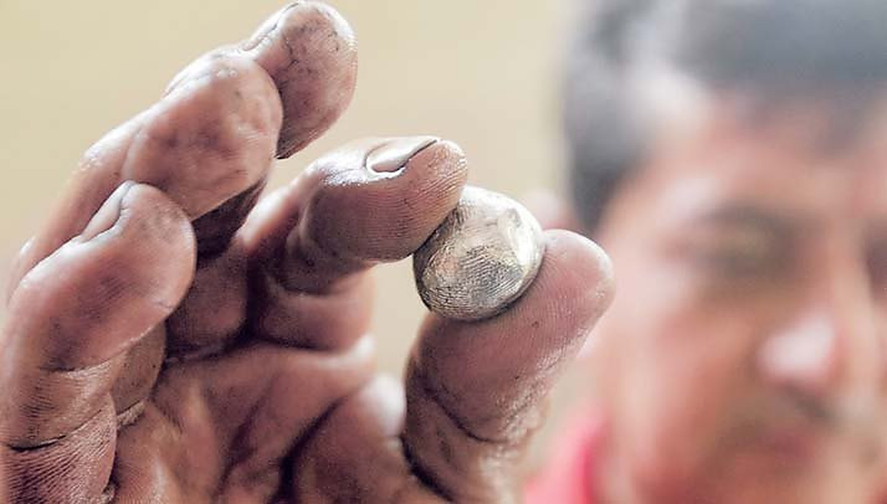
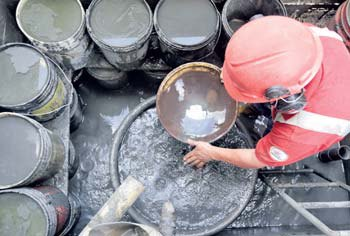
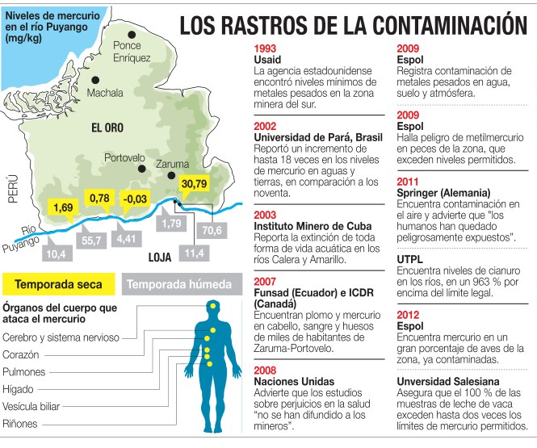
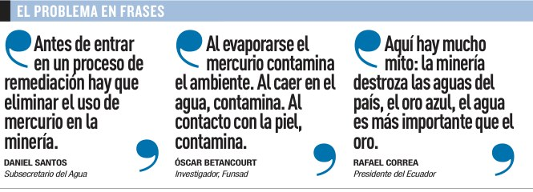
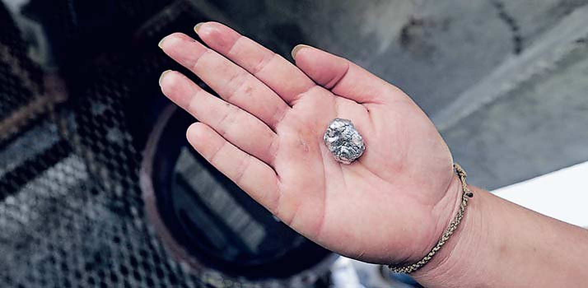
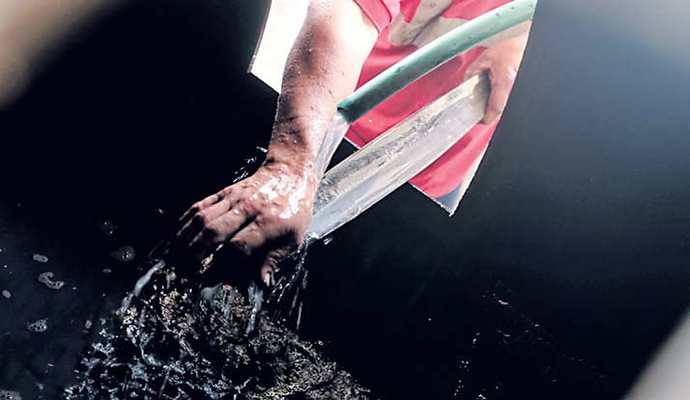
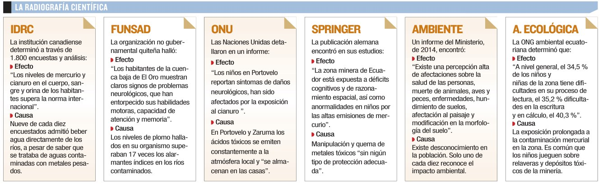
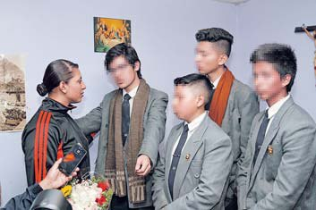
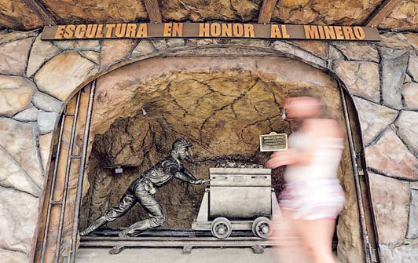
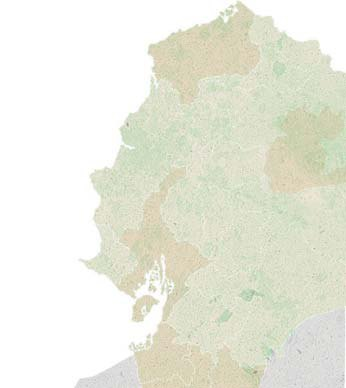

El mercurio estaba prohibido desde 2013. En 2016 se compraba en el mercado de Zaruma, se quemaba en las cocinas de Portovelo y bajaba por 160 kilómetros de la cuenca Puyango hasta Perú. Diecisiete estudios lo sabían. Nadie había avisado.
Pese a los muchos reportes sobre el impacto del mercurio en la zona minera del sur, la contaminación no frena. Casi 80.000 personas están expuestas a niveles nocivos.
Desde 1993 Ecuador sospechaba que los ríos de Portovelo, Zaruma, Piñas y Camilo Ponce Enríquez estaban envenenados. Diecisiete estudios e informes, revisados uno por uno para esta serie, convirtieron la sospecha en certeza: el agua, el aire, la tierra, la leche, los peces y buena parte de los 80.000 habitantes de la zona tenían mercurio o plomo encima de cualquier norma.
El mecanismo es viejo. Para separar el oro de la piedra se usa cianuro y luego mercurio. Lo que no se quema y se va al aire debería ir en camión a la relavera del Estado. Media docena de dueños de plantas lo dijeron sin rodeos, a cambio de que no aparecieran sus nombres: solo se envía una parte. El resto se echa al río.
Los números daban vergüenza. Mercury Watch, un programa avalado por Naciones Unidas, ubicó a Ecuador en 2013 como el cuarto país que más mercurio emite en el mundo: 50 toneladas al año, suficientes para llenar la bodega de un avión Hércules. Kevin Telmer, presidente del Consejo Mundial de Minería Artesanal, lo resumió así en entrevista: "Básicamente sus ríos están muertos".
El Ministerio de Minas no comentó por la "agenda apretada" de su vocero. El Ministerio del Ambiente no respondió. Salud dijo a la Asamblea, en septiembre de 2015, que recién levantaba información. Mientras tanto un estudio de la Universidad Nacional Autónoma de México, aún sin publicar cuando salió la serie, había medido 2,9 miligramos de mercurio por kilo de sedimento en los ríos: más de once veces el límite internacional de 0,25.
Básicamente sus ríos están muertos, porque es una combinación mortal.
Kevin Telmer, Consejo Mundial de Minería Artesanal

Mercurio en sedimentos de los ríos de la zona minera del sur, en miligramos por kilo. El límite internacional recomendado es 0,25.
Estudios e informes que documentaron la contaminación antes de la serie. Reconstruido a partir de la infografía original "Los rastros de la contaminación".
Encuentra niveles mínimos de metales pesados en la zona minera del sur.
Reporta un aumento de hasta 18 veces en los niveles de mercurio en aguas y tierras.
Reporta la extinción de toda forma de vida acuática en los ríos Calera y Amarillo.
Encuentran plomo y mercurio en cabello, sangre y huesos de miles de habitantes de Zaruma y Portovelo.
Advierte que los estudios sobre perjuicios en la salud no se han difundido a los mineros.
Registra contaminación de metales pesados en agua, suelo y atmósfera; metilmercurio en peces.
Encuentra contaminación en el aire y advierte que los humanos han quedado peligrosamente expuestos.
Mercurio en gran porcentaje de las aves; cianuro en los ríos hasta 963 % sobre el límite legal.
Metales en el 46 % de las muestras de suelo. Ecuador, cuarto emisor mundial de mercurio.
160 km de la cuenca Puyango son "ríos muertos". El Gobierno reconoce intoxicación mercurial en hasta el 56 % de la población.
No considera posible remediar la presencia de metilmercurio cuenca abajo.
Mide 2,9 mg/kg de mercurio en sedimentos: más de once veces el límite. Estudio inédito al momento de la serie.


El metal tóxico es ilegal en el país desde 2013 y su plazo de eliminación venció en 2015. Pero se consigue en el mercado negro hasta por 75 dólares la libra y se quema en las cocinas.
En papeles estaba resuelto. La reforma de 2013 a la Ley de Minería prohibió el mercurio y dio dos años para erradicarlo. El plazo venció en 2015. En abril de 2016 fuimos a comprarlo. "Usted va por la iglesia, abajito pregunta y consigue. 65 dólares vale la libra. También puede ir a El Pache, donde están las plantas. Allá le venden a 75", nos explicó el minero Patricio Aguilar. En el mercado central de Zaruma un hombre al que llaman Videlita lo despachaba en botellas pequeñas de cola.
Las plantas de beneficio encontraron cómo esquivar el control. En una de las 82 que operaban en la zona, el área del mercurio estaba apartada, bajo candado, sin letreros. "Cuando llegan los de Arcom y nos hacen abrir, solo les decimos que las máquinas ya no se utilizan", confesó el dueño. Adentro, un trabajador manipulaba el metal sin guantes y con una camiseta en la nariz como mascarilla. Nos invitó a tocarlo. En la palma se mueve como una bolita de plastilina pesada. Es tóxico e ilegal.
La prohibición creó un negocio. Rodrigo Figueroa, fundador de la Asociación de Mineros Morancay, calculó que la zona necesita hasta dos toneladas mensuales y que el metal entra de contrabando desde Perú y Colombia. La caneca que costaba 1.000 dólares se había multiplicado por cuatro. La alcaldesa de Portovelo, Paulina López, reconoció el efecto más perverso: los mineros pasaron a quemarlo en sus casas, de madrugada, contaminando a sus propias familias.
El Estado tenía 14 inspectores para más de 500 puntos mineros en El Oro. La Arcom admitió que el contrabando "se escapa de nuestras manos". El Ministerio del Ambiente tenía un programa llamado Cero Mercurio y no respondió sobre sus avances.
Aquí todos usan mercurio y cianuro. Los desperdicios se tiran al río de noche, de día. Los que digan que no se usa, mienten.
Rubén Aguilar, minero artesanal con dos décadas en el oficio
Así procesaba el oro una planta de beneficio en 2016, según lo constatado en el terreno.
Veinte toneladas diarias de material minero se muelen y se dejan reposar en 100 kilos de cianuro.
El sobrante va a una piscina de 1.200 metros cúbicos. Para neutralizarlo harían falta ocho galones de peróxido de hidrógeno. Se usan cuatro.
El material, reducido a 250 kilos, gira doce horas en cilindros con dos libras de mercurio. La amalgama se quema: el metal se va al aire.
El agua contaminada se reutiliza hasta un mes. "Luego se echa al río".
El Pleno ratifica el Convenio de Minamata con 95 votos y el oficialismo llama la atención al Gobierno: "No se cumplió el mandato legal".
Un día después de la primera entrega, oficialismo y oposición votaron juntos. Los 95 legisladores presentes ratificaron el Convenio de Minamata, el tratado internacional para eliminar el uso del mercurio, que Ecuador había firmado en 2013 y tenía guardado en un cajón.
La sorpresa fue el tono. Marcela Aguiñaga, vicepresidenta de la Asamblea y alta dirigente del partido de Gobierno, reconoció que el "mandato legal no se ha cumplido a cabalidad", admitió el paso ilegal del mercurio por las fronteras y pidió a las autoridades controlar el mercado negro. Diego Salgado, de CREO, votó a favor con una advertencia: el convenio corría el riesgo de quedar en "un gran avance en blanco y negro".
Al día siguiente, en la Comisión de Régimen Económico, la edición impresa de la investigación circuló entre los asambleístas como material de consulta. La fotografía de la sesión muestra a Patricio Donoso, de CREO, con el periódico abierto tras presentar una reforma a la Ley Minera.
Fue la reacción institucional más rápida que produjo la serie. También la más frágil: ratificar un tratado no cierra una sola planta.
El mandato legal no se ha cumplido a cabalidad.
Marcela Aguiñaga, vicepresidenta de la Asamblea Nacional (Alianza PAIS)

Autoridades y activistas evalúan la ratificación. Creen que hay que capacitar y vigilar a los mineros. La radiografía científica: seis instituciones, un diagnóstico.
En Zaruma y Portovelo nadie celebró. José Victoriano Ochoa, 38 años en la Municipalidad de Zaruma, lo dijo con la paciencia de quien ha visto pasar muchos decretos: la firma se aplaudirá cuando llegue la acción. "Los mineros siguen usando mercurio porque así lo han permitido quienes deben vigilar esa labor".
Jorge Román, activista ambiental, apuntó a la Arcom y a sus cambios continuos de jefes: cada nueva autoridad tarda meses en entender la zona. Manuel Carrión, exprocurador sindical de Portovelo, pidió no quedarse en el mercurio: "El cianuro también debería erradicarse. Se usa en mayores cantidades y es también muy nocivo".
Esa entrega reunió la evidencia científica en una sola página. El Centro Internacional de Investigaciones para el Desarrollo de Canadá encuestó a 1.800 personas: nueve de cada diez admitieron beber agua directamente de los ríos sabiendo que estaban contaminados. Funsad encontró plomo en el organismo de los habitantes de la cuenca baja 17 veces por encima de lo hallado en los ríos. Naciones Unidas registró síntomas de daño neurológico en los niños de Portovelo. Acción Ecológica midió que el 34,5 % de los niños de la zona tenía dificultades de lectura, el 35,2 % de escritura y el 40,3 % de cálculo.
El propio Ministerio del Ambiente, en un informe de 2014, admitía "una percepción alta de afectaciones sobre la salud de las personas". Solo uno de cada diez habitantes reconocía el impacto ambiental.
Los mineros siguen usando mercurio porque así lo han permitido quienes deben vigilar esa labor.
José Victoriano Ochoa, exfuncionario municipal de Zaruma

Seis instituciones, un diagnóstico. Reconstrucción del cuadro publicado el 7 de abril de 2016.
Los niveles de mercurio y cianuro en cuerpo, sangre y orina de los habitantes superan la norma internacional.
CausaNueve de cada diez encuestados admitió beber agua directamente de los ríos.
Problemas neurológicos que entorpecen habilidades motoras, atención y memoria en la cuenca baja de El Oro.
CausaPlomo en el organismo 17 veces por encima de los índices de los ríos.
Los niños de Portovelo reportan síntomas de daño neurológico por exposición al cianuro.
CausaLos ácidos tóxicos se emiten constantemente y "se almacenan en las casas".
Déficits cognitivos y de razonamiento espacial y anormalidades en niños por las emisiones de mercurio.
CausaManipulación y quema de metales tóxicos sin protección.
Percepción alta de afectaciones a la salud, muerte de animales, hundimiento de suelos.
CausaSolo uno de cada diez habitantes reconoce el impacto ambiental.
34,5 % de los niños con dificultades de lectura; 35,2 % de escritura; 40,3 % de cálculo.
CausaEs común que los niños jueguen sobre relaveras y depósitos tóxicos.

Los alcaldes de Zaruma, Jhansy López, y de Portovelo, Paulina López, frente a frente con la investigación. Un conflicto binacional con Perú en el horizonte.
Dos alcaldes, dos entrevistas, una misma confesión. Jhansy López, de Zaruma, fue el más directo: "A la industria minera le interesa un comino el ambiente. Le interesa sacar su beneficio. Pasas por el río a las ocho de la noche y está lleno de arena porque todo el mundo bota los desperdicios". Le preguntamos cuántas veces se había ejecutado la garantía ambiental que los mineros depositan antes de explotar. "Ni una. Cero. No se aplica".
Paulina López, alcaldesa de Portovelo y aliada del oficialismo, intentó sostener que la actividad ya se hacía sin mercurio. El diálogo quedó registrado tal cual:
—Bueno, en teoría.
—Claro. En teoría.
—¿Sí?
—No. Digo en teoría, porque en la práctica...
—En la práctica, visitamos los centros mineros y...
—Y los halló usando mercurio.
—¿Para qué engañarse?
La alcaldesa reveló además que la contaminación ya la manejaba la Cancillería, porque las autoridades peruanas venían a monitorear la relavera y a reclamar. Una demanda ambiental de Perú se había pospuesto con un convenio entre presidentes, el proyecto Puyango, que estaba paralizado. "¿Falta dinero o voluntad?", preguntamos. "Voluntad política". Ni la Cancillería, ni Ambiente ni la Embajada de Perú respondieron si existía una pugna judicial por el tema.
Ni una. Cero. No se aplica. Cuando se aplique, entonces va a haber cambios.
Jhansy López, alcalde de Zaruma, sobre la garantía ambiental que nunca se ejecutó

La contaminación tiene rostro humano. En Portovelo, el rincón más afectado por la minería, los habitantes huyen del río, purifican el agua y compran mascarillas.
Alguna vez hubo peces aquí. La corriente oscura que se ve desde el Puente Negro fue el río Amarillo, donde las familias hacían picnic, lavaban ropa y pescaban. Juan Merchán, informático treintañero, creció nadando ahí. "Ahora la gente le tiene miedo al agua del Amarillo. Está muerto".
Cuando Óscar Betancourt hizo su investigación, hace una década, en los ríos Amarillo y Calera todavía se atrapaban peces en costales. La alcaldesa de Portovelo contó que un año antes, en una inspección, sus colaboradores encontraron un pez y se quedaron mirándolo un rato. Pudo haber sido el último.
En Portovelo los tachos de basura son tanques de cianuro vacíos, con la etiqueta todavía legible, que a veces sirven también para recoger agua. Gina Aymara, activista, tiene un purificador en la cocina y mascarillas guardadas en un cajón que no usa. "Pero no quita que me da miedo respirar". En el aire de la zona los tóxicos están diez veces sobre el límite internacional.
Gina Aguilar, psicóloga y profesora, no cree que la contaminación sea para tanto. Donde sí la ve es en el aula: "He notado que nuestros niños no captan. No es que demoren. Es que no captan". No conocía el estudio de Acción Ecológica que en 2012 midió deficiencias de aprendizaje en el 40 % de los niños de la zona. Uno de sus alumnos, Daniel, tiene ocho años y es hijo de minero y nieto de un pescador que llegó buscando oro. Quiere ser minero, o cazador de oro, como él dice. Para ser como su abuelo tendría que irse. Aquí ya no hay peces.
He notado que nuestros niños no captan. No es que demoren o que no capten con facilidad. Es que no captan.
Gina Aguilar, profesora en Portovelo

La contaminación de la zona minera se extiende a 17 ríos de seis provincias. Los productos agrícolas de esas áreas no pasan por inspección gubernamental.
En Guayaquil no hay minería, pero hay contaminación minera. Tenguel, la parroquia más lejana de la ciudad, tiene cuatro ríos con cadmio, cobalto, níquel y mercurio sobre los límites legales, según los informes de la propia dirección de ambiente municipal. El caso lo llevó a los tribunales seis años antes la abogada Inés Manzano, y seguía esperando fallo.
El daño nace en los centros extractivos, pero no se queda ahí. La Secretaría Nacional del Agua reconoció en 2010 que los ríos Estero María, Bogotá, Santiago y Tululbí, en Esmeraldas, no eran aptos para consumo humano por la minería. En 2012 repitió el diagnóstico para el Coca, el Salado y el Quijos, en Napo. En ningún caso emitió una alerta para que los ciudadanos lo supieran.
La cuenca Puyango arrastra los tóxicos hasta el norte de Loja, desde Catamayo hasta Zapotillo, según una comisión de energía atómica contratada en 2010 por el Municipio de Puyango. Y sigue hasta el río Tumbes, en Perú, donde informes de 2004, 2006 y 2014 alertaron sobre contaminación importada desde Ecuador, presente en siete departamentos.
Lo más delicado está en los platos. Informes técnicos de Guayaquil hallaron metales pesados en muestras de banano y cacao de Tenguel. Sus habitantes, contó Manzano, temen hablar del tema por miedo a no poder vender la cosecha. El Ministerio de Salud no respondió qué controles hace para que esa leche, esos peces y esas frutas no lleguen a otras ciudades.
Los habitantes de ese sector temen tocar el tema de la contaminación por miedo a que sus cultivos de banano y cacao no puedan ser vendidos.
Inés Manzano, abogada ambiental

Lo que pasó con el mercurio, con Zaruma y con el río después de la serie.
El 5 de abril, a las 48 horas de la primera entrega, el Pleno aprobó por unanimidad la ratificación del Convenio de Minamata. Ecuador depositó la ratificación en julio de 2016.
Tras la serie, la Asamblea avanzó en la prohibición del uso de mercurio en la minería y ratificó el Convenio de Minamata. El reportaje recibió una mención de honor del Premio Roche de Periodismo en Salud. La relatoría del jurado está publicada en premiorochedeperiodismo.com.
Ecuador presentó ante la Convención de Minamata su Plan de Acción Nacional para reducir y eliminar el mercurio en la minería artesanal y de pequeña escala, como exige el artículo 7 del tratado.
Agricultores y ambientalistas del departamento peruano de Tumbes se concentraron el 25 de enero contra las descargas mineras que llegan desde Zaruma y Portovelo. Un estudio de la Universidad Nacional de Trujillo (2019) confirmó cianuro y metales pesados en el agua. Unas 200.000 personas en riesgo, según los organizadores.
La noche del 15 de diciembre un socavón se abrió en el centro de Zaruma y obligó a evacuar familias. Los vecinos lo atribuyeron a la minería ilegal que sigue horadando bajo la ciudad. La remediación tomó nueve meses y costó 3,45 millones de dólares, a cargo del Cuerpo de Ingenieros del Ejército.
Actualización redactada en septiembre de 2026 con fuentes públicas citadas en cada hito. La serie original no ha sido modificada.